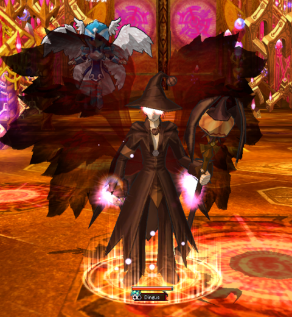

- Itens do tipo INT de inteligência
- Mascote Valkyria INT
- Pergaminhos com mais inteligência do que força IV
- Tintas sempre de inteligência + 130
Dainn é um mago do jogo Lunia, Lunia é um MMORPG bem único, que é descrito como arcade de ação com personagens bem desenhados em um estilo anime e visual bem colorido e fez parte da infância de muita gente, foi lançado em 2006 e chegou ao Brasil em 2008 e infelizmente fechado oficialmente em 2018, desde então uma empresa ou outra tenta recriar algum servidor para matar a saudade de muita gente.
Historia do Dainn
Um Mago Real do Reino Lunia, ele é seguido por Eir em sua missão para investigar as forças iminentes do mal.
Sendo normalmente calmo, frio e controlado, ele frequentemente assume o papel de liderança.
Como discípulo do mais alto Mago do Continente Rodésia, ele é bem versado em uma ampla gama de magia elemental.
Tipo de classe
Como a classe de mago típica de qualquer RPG, ele é melhor para "jogadores nuker".
Sua alta produção de dano e rápida velocidade de recuperação de mana compensam sua falta de saúde e defesa física.
Um personagem popularmente escolhido, seu papel em grupos é derrubar o inimigo rápido e forte.
Ele tem uma série de magias com ( areas de efeito ) que podem causar dano a um grande número de inimigos de uma só vez.
Com magias de longo alcance adicionais que podem causar uma quantidade excessiva de dano quando usadas apropriadamente.
Tipo de arma
Cajado

Prós e contras de Dainn
Prós de Dainn
Ataques de longo alcance.
Ataques de Homing e Magias AoE (Área de Efeitos).
Combos de cadeia longa.
Habilidades moderadamente poderosas.
Efeitos em certas habilidades.
Recuperar MP sem poções de MP.
Contras do Dainn
Alto consumo de MP.
Saúde mais baixa do que o normal em relação a outras classes.
Dano mínimo de combate corpo a corpo.